О происхождении моём
С колыбели я была окружена музыкой, празднествами и весельем — как и подобает той, чьё рождение предопределено самой судьбой. Иного и быть не могло: мои родители — барды, люди, наделённые истинным талантом.
Мы скитались из города в город — хотя слово «скитались» звучит слишком простонародно. Скажем иначе: мы дарили своё искусство тавернам, ярмаркам и карнавалам. Порой родители даже снисходили до того, чтобы присоединиться к отрядам каких-то авантюристов — исключительно ради того, чтобы восславить их сомнительные подвиги в песне.
Мы не жили в роскоши, но я никогда ни в чём не нуждалась — ибо мои родители умели обеспечить достойную жизнь для своей единственной дочери. Матушка обучила меня игре на свирели, отец — на скрипке. Бабушка, в свою очередь, пыталась приобщить меня к магии, но, увы, мои изысканные способности лежали в иной плоскости: фокусы, что дались мне в детстве, были столь же изящны, сколь и просты.
Да, я, возможно, не столь одарена в музыке, как мои родители, или в волшебстве, как бабушка, но зато я сумела — пусть и не с божественным совершенством, а всего лишь посредственно — управлять плетением через звуки. И это уже немало для той, кто рождён блистать.
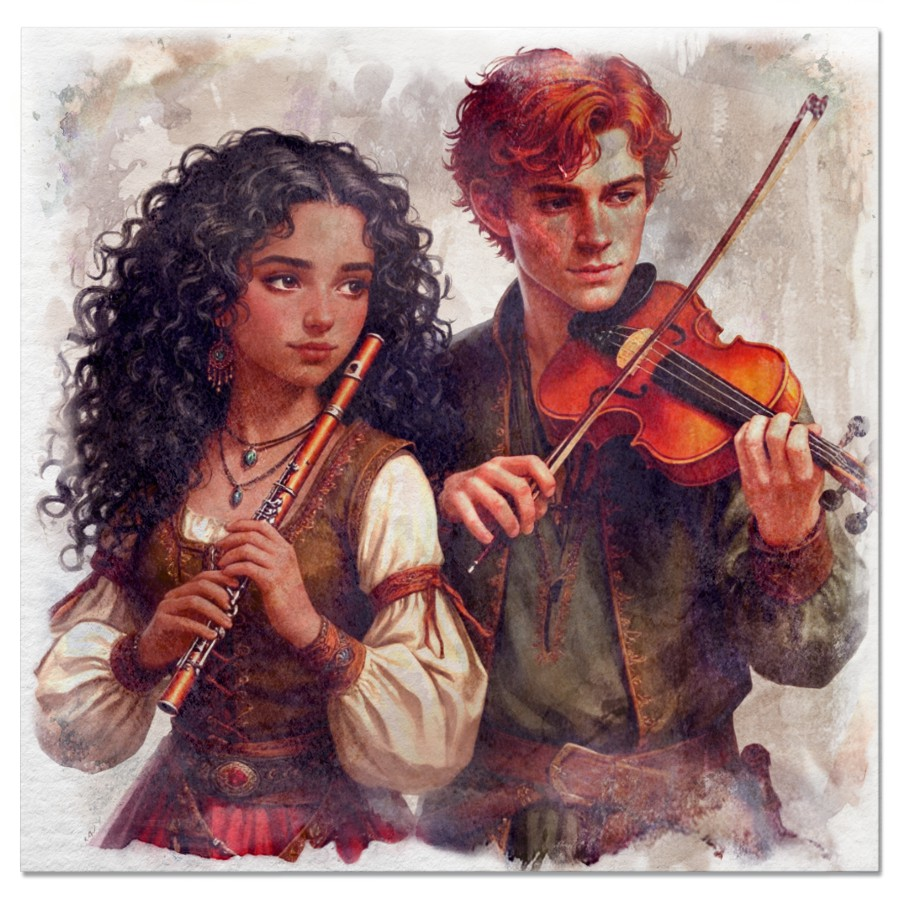
Рождение звезды
Мне даже в детстве не хотелось оставаться в тени родителей — о, как это было досадно! Сперва все лишь умилялись, какая я маленькая и милая: «Ах, какая кроха!», «Какая прелесть!». Но чем старше я становилась, тем меньше внимания доставалось моей персоне — и это приводило меня в подлинное негодование. Как смели они отвлекаться от моего сияния?
Разумеется, превзойти родителей в их сфере — в чистой, неподдельной музыке — мне оказалось не под силу. Но разве истинная звезда станет унывать из-за подобных мелочей? О нет — я решила добиться признания своим способом, достойным той, кто рождён блистать.
К счастью, природа не обделила меня: слух — безупречный, чувство ритма — врождённое, тело — гибкое, словно лоза, а внешность — столь притягательная, что даже самые черствые сердца замирали при моём появлении. Сперва я просто танцевала — легко, изящно, непринуждённо. А лет с десяти начала практиковаться с клинками. О, даже тогда это выглядело эффектно — сочетание грации и стальной отточенности движений уже тогда вызывало восхищённые вздохи.
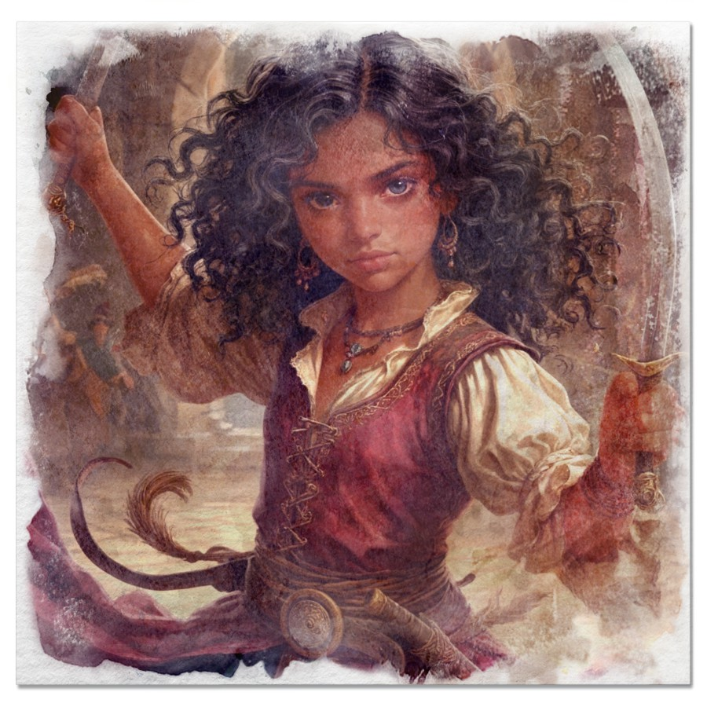
К концу подросткового возраста всё изменилось: теперь все взгляды были прикованы исключительно ко мне. Музыка моих родителей, некогда главная часть представления, превратилась лишь в достойное сопровождение — фон, подчёркивающий моё искусство. Я стала центром, вокруг которого вращался весь мир выступления.
Пепельная Роза
Мы с родителями, дабы избежать профессиональных конфликтов и ненужных ссор, решили разделить наши творческие пути. К тому же обстоятельства сами подталкивали к этому: матушка ожидала появления брата, а мне — о, судьба благоволит истинным талантам! — поступило блистательное предложение присоединиться к труппе странствующих артистов.
Поначалу было непривычно и даже немного одиноко находиться вдали от семьи. Но хандра развеялась быстро — как туман под лучами солнца. Новые друзья, восторженные взгляды публики, аплодисменты, что звучали только для меня... О, это было поистине упоительно! Теперь я могла сиять в полную силу — без сравнений, без тени чьего-то величия.
Я усовершенствовала свой танец, добавив в него огня — в прямом и переносном смысле. Каждое движение стало ещё более отточенным, каждое па — ещё более завораживающим. А на сцене, при правильном освещении и в тщательно подобранном костюме, зрелище становилось поистине феерическим.
Для своего сценического имени я избрала имя бабушки — Пепельная Роза. О, как это было символично! Особенно когда в финале представления я исполняла свой коронный номер: воздушный поцелуй, лёгкий взмах рукой — и цветочные лепестки, кружась в воздухе, превращались в блестящий пепел. Магия? Всего лишь простой фокус, но публика ахала и трепетала.

Каждый мой выход на сцену заканчивался шквалом оваций и морем цветов у моих ног. Поклонники толпились у кулис, осаждали меня комплиментами и подарками — к этому, увы, быстро привыкаешь. Их восхищение стало для меня чем-то само собой разумеющимся, как восход солнца.
Золотая клетка
Среди всей этой толпы запомнился лишь один — Ричард. Богатый мужчина средних лет, галантный, щедрый, эрудированный и даже наделённый толикой остроумия. С ним было действительно интересно: каждое свидание превращалось в сюрприз, достойный моей изысканной натуры.
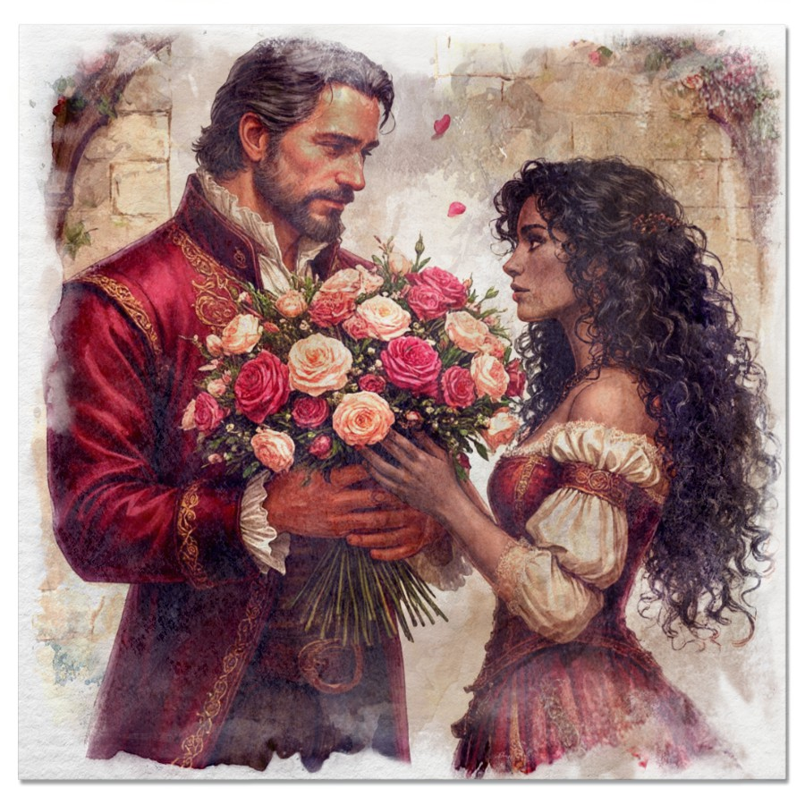
Но... я вовремя остановилась. Стать любимой птичкой в золотой клетке? О нет! Этот брак наложил бы на меня тяжкое бремя обязанностей. Пришлось бы соответствовать его статусу, играть роль примерной супруги, улыбаться нужным людям и сдерживать порывы своей свободолюбивой души.
Да и где гарантии, что, когда безжалостное время заберёт мою молодость и красоту, оно не заберёт заодно и его любовь? Возможно, судьба ещё сведёт нас — и тогда я узнаю ответ на этот вопрос. Но пока... пока я предпочла свободу.
Наследие бабушки
Моя счастливая, блистательная жизнь продолжалась — пока бабушка, та самая, что в детстве заплетала мне косички и учила первым фокусам, не устроила перед своей кончиной нечто совершенно из ряда вон выходящее.
Понимаю, что дни её были сочтены и что, по сравнению с мягкой, нежной матерью, я — куда более подходящая кандидатура для этой миссии. Но как же досадно, что она не рассказала обо всём раньше! Не оставила мне шанса узнать от неё чуть больше, постичь глубину её знаний, прикоснуться к тому, что она так тщательно скрывала.
Я всегда знала, что мы с матерью, вероятно, унаследовали черты нашего деда — ведь с бабушкой у нас почти не было внешнего сходства. В глубине души я даже предполагала, что родители бабушки были против её интрижки, а тем более — против появления на свет бастарда. Потому-то она и молчала о своих родственниках и о дедушке.

Хах! Я и подумать не могла, что родина этого загадочного дедушки таила для неё и для моей матери настолько великую опасность, что бабушка хранила молчание вплоть до самой смерти. Какая ирония: всю жизнь она оберегала нас от какой-то угрозы, а теперь эта тайна легла на мои плечи — тяжёлым, неожиданным грузом.
Но я разберусь с этим. Я, Азалия Корвара, не из тех, кто пасует перед загадками.
Дар проклятий
По крайней мере теперь я знаю чуть больше о своей семье и понимаю, откуда берутся мои силы. Прежде я всё списывала на удачное стечение обстоятельств, на везение или на волю капризных богов — но теперь истина открылась мне во всей своей величественной ясности. О, я действительно могу насылать несчастья!
Вспомнить хотя бы тот случай: в пылу ссоры я бросила своей коллеге — с презрением и досадой — «Да чтоб ты обосралась!». И что же? Она провела ближайшие несколько дней, запершись в нужнике, пропуская все выступления, лишая публику истинного зрелища. О, как унизительно для неё — и как показательно для меня!
К сожалению, прежде я и не подозревала, что во мне таится подобная сила. И даже теперь, обладая знанием, я всё ещё не могу ей управлять — эта мощь бурлит во мне, словно дикий поток, не желая подчиняться воле своей хозяйки. Но я обуздаю её. Я научусь направлять эту силу — так же, как научилась направлять взгляды публики на себя.
Решимость
Двадцать семь — прекрасный возраст. Я любима, обеспечена и сияю на сцене, словно звезда, упавшая с небес. Но что будет через десять лет? А через тридцать? Вдруг я так и не оставлю своего следа в истории, достойного моей натуры?
Сколько человек после моей смерти вспомнят обо мне и скажут, что я была величайшей танцовщицей всех времён? Нет! Ни за что! Раз уж мне дарованы задатки и выпал реальный шанс изменить что-то в этом мире — и даже спасти Баровию, если верить бабушкиным намёкам, — я рискну всем. Чёрт возьми, я попробую!
Если у меня получится, этот мир запомнит меня не просто как блистательную артистку, а как героя, изменившего ход событий. Если же нет... что ж, мою историю расскажет этот дневник.
И вот какое распоряжение я оставляю: если от меня не будет никаких вестей на протяжении пяти лет, копии книги, оставленной мне бабушкой, её записки и моё прощальное письмо надлежит доставить моим родителям. А миссия, что лежит на моих плечах, перейдёт к моему младшему брату — или к его потомкам.
О брате моём, Маркусе
Маркус... Славный мальчик. Он совсем не одарён магией, не обладает музыкальным талантом, сравнимым с родительским, и — что самое удивительное — не жаждет славы и внимания, как я. Просто милый и ласковый ребёнок, лишённый амбиций, но наделённый добротой, которая, возможно, станет его путеводной звездой.
Он обязательно найдёт свой собственный путь в этой жизни — пусть и не столь блистательный, как мой. Но разве это делает его менее достойным? О нет. Просто наши звёзды сияют по-разному: его — мягко и тепло, моя же — ярко, ослепительно, неукротимо. И я намерена гореть так, чтобы этот свет увидели все — и запомнили навсегда.
Путь авантюриста

Я покинула свою труппу — с лёгким сердцем и без лишних сантиментов. В конце концов, они были лишь фоном для моего сияния, а теперь пришло время для чего-то большего. Навестила родителей, насладилась их искренним восхищением (о, как приятно видеть, что они всё ещё гордятся мной!) — и твёрдо встала на путь авантюриста.
Бабуля, увы, не успела поведать мне, как попасть в Баровию. Какая досада! Да и, честно говоря, как пусть и самая шикарная, харизматичная танцовщица с самыми посредственными и базовыми навыками в магии сможет освободить целое королевство от проклятия? Смешно, не правда ли?
Но я не из тех, кто отступает перед трудностями. Мне однозначно нужно больше опыта, больше информации — и, само собой, сильные спутники, на которых можно будет положиться. Не какие-то там тряпки, а настоящие воины!
Целый год я потратила на поиски — и что в итоге? Никто не то что не знает, как попасть в Баровию, — даже не слышал про неё! На картах её нет, в хрониках не упоминается, словно её и вовсе не существует. О, как это раздражает! Неужели весь мир сговорился скрыть от меня эту тайну?
Реального боевого опыта тоже не сильно прибавилось — и это ещё более досадно. Все мои спутники оказались либо слишком слабы, и до настоящего боя даже не доходило, либо... слишком озабочены. О да, эти жалкие попытки впечатлить меня! Они пылинки с меня сдували, защищали буквально от всего — от сквозняка, от назойливых насекомых, от малейшей царапины! Скучно. Так скучно, что порой хотелось просто взвыть от тоски.
Артур
Но, кажется, судьба наконец улыбнулась мне. Я присмотрела угрюмого здоровяка по имени Артур. Он стоит особняком, не липнет ко мне с комплиментами, не строит глазки — напротив, смотрит так, будто я ему чем-то досаждаю. О, это уже интереснее!
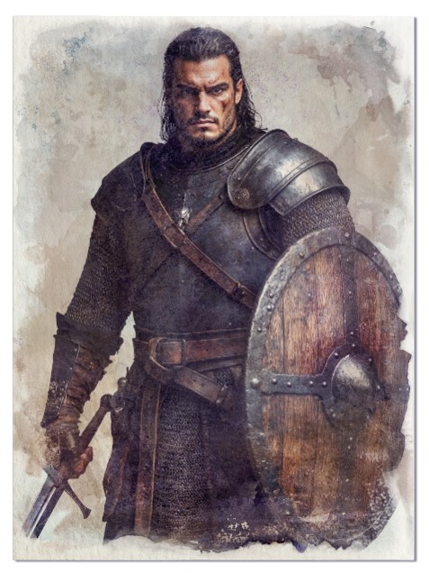
Кажется, он тоже ищет спутников — и не похож на тех балбесов, с которыми я была в команде до этого. Возможно, если он присоединится ко мне, что-то и получится. Вместе мы найдём путь в Баровию — и я докажу всему миру, что Пепельная Роза достойна войти в историю не только как блистательная артистка, но и как спасительница королевства.
Ну что ж, я всё-таки соизволила присоединиться к компании этого... как его... ах да, Артура. О, божественное снисхождение, какое испытание для моих утончённых нервов! Этот мужчина — воплощение всего, что я презираю в представителях его пола: чёрствость, тупоумие и бесцеремонность, возведённые в абсолют.
Ирония судьбы: временами это даже... забавляет. Мы обмениваемся колкостями — словно два клинка в изящной дуэли. Полагаю, если бы у меня был старший брат (что, разумеется, немыслимо — моя родословная слишком безупречна для подобных банальностей), наши отношения выглядели бы примерно так же. Мы с Артуром питаем друг к другу эту восхитительно ядовитую, почти родственную антипатию — и это, признаться, придаёт общению особый шарм.
Малбрин
Позже к нашей малочисленной, но выдающейся компании присоединилась некая Малбрин — тёмная эльфийка, чьё очарование граничит с детской беспомощностью. О, эта её скромность! Как у котёнка, впервые высунувшего нос из уютного гнезда в огромный, пугающий мир. Так и хочется взять её под своё крыло — хотя, ха, она старше меня больше чем в три раза!
Но что значат эти жалкие цифры рядом с моей врождённой мудростью и харизмой? Я, безусловно, стану для неё той самой старшей сестрой — блистательной, непревзойдённой, на которую можно положиться, у которой всегда найдётся совет, достойный королевского двора.
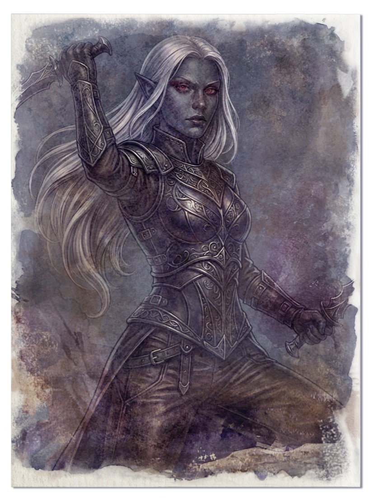
Даггерфорт и Вистани
Обычное утро в Даггерфорте — скука смертная. Опять этот гонец с весточкой от герцогини Морвен... Я уже было приготовилась зевать в кулак, ожидая приглашения на чашку чая или очередного унылого поручения. Но судьба, видимо, решила вознаградить меня за терпение.
«Прогнать чужаков?» Пфф, да это же проще, чем сыграть гамму на лютне! Если мои чарующие речи не возымеют действия (а они, поверьте, возымеют), то внушительная сила Артура и... хм, экзотическая внешность Малбрин (о, как эти недалёкие смертные трепещут перед дроу из-за своих глупых предрассудков!) довершат дело.
Но главное событие дня ждало впереди. Впервые за год я услышала это волшебное слово — Вистани! О, даже если бы я не была в курсе всей этой родословной эпопеи, одного взгляда хватило бы, чтобы понять: это мои люди. Цвет кожи, волос, неукротимый нрав, образ жизни — всё это словно отражение меня. В их обществе я наконец почувствовала себя дома — не так, как с родителями. Да, их уклад был близок, но им отчаянно не хватало этого — огня, размаха, истинного чувства коллектива, достойного моей исключительной натуры.
Я развлекалась всю ночь — пела, шутила, блистала. И впервые за долгое время ощутила себя по-настоящему живой. Как будто сама вселенная признала мою уникальность и устроила этот праздник в мою честь.

Туман Баровии
О, как забавно порой складываются обстоятельства! Я-то полагала, что, встретив кого-то из Вистани, мне придётся потратить уйму драгоценного времени — вкрадчиво улыбаться, плести словесные кружева, втираться в доверие, уламывать показать эту их загадочную Баровию... Но судьба, видимо, решила избавить меня от столь утомительных хлопот. Ха! Они сами предложили, сами провели — словно знали, кого ведут.
Разумеется, без них я бы в жизни не отыскала путь сюда: мои изысканные стопы не созданы для блужданий по неведомым тропам. И вот мы едем по дороге, знакомой лишь им, — и вдруг, хоп! Нас окутывает магический туман, вязкий, как сироп, и через пару минут мы переносимся в место, которого нет ни на одной карте. О, это было почти... впечатляюще. Почти. Хотя, признаться, зрелище оказалось куда мрачнее, чем я ожидала.
Местечко, надо сказать, унылое до безобразия: всё вокруг мёртвое, словно сама жизнь брезгует здесь задерживаться. В лесу мы наткнулись на труп гонца — зрелище не для слабонервных, но меня, разумеется, оно не слишком взволновало. Осмотреться толком не успели: откуда-то донёсся ужасающий вой — такой, что даже Артур на мгновение побледнел. Слава богам, мы вовремя ретировались и вновь оказались в безопасности на знакомом тракте.
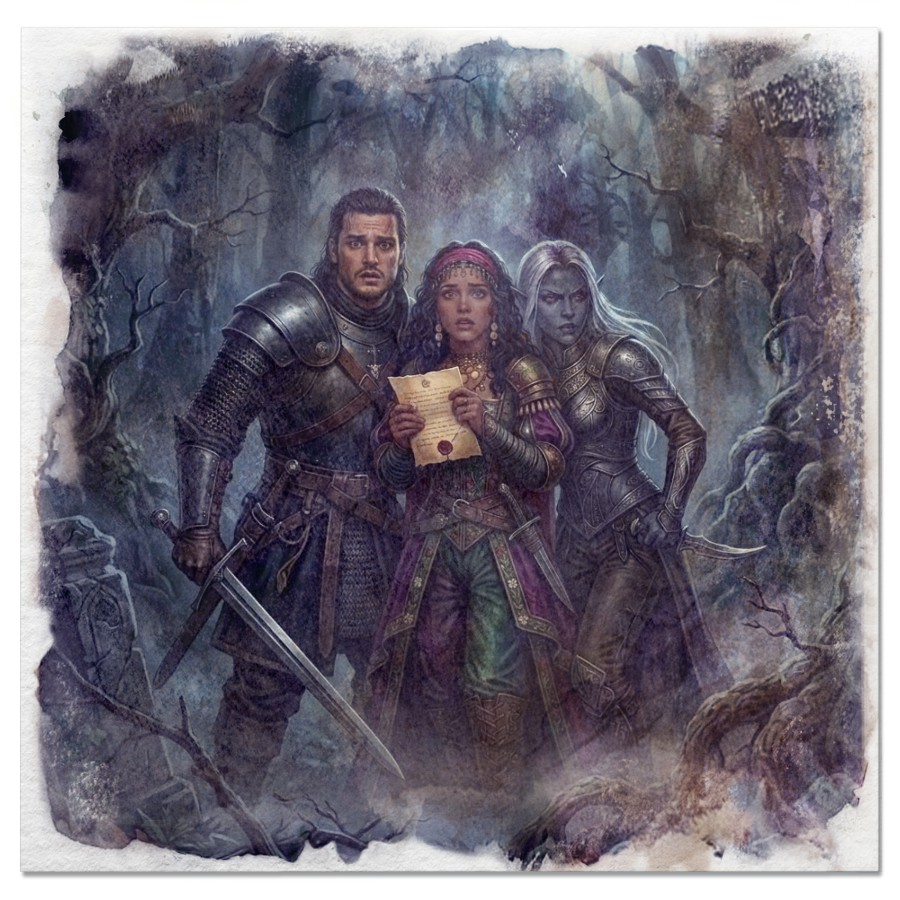
Милые Вистани (хотя «милые» — это, пожалуй, слишком громко сказано) проводили нас до деревни Баровия. О, эта «деревня»... Настоящая дыра, достойная разве что упоминания в какой-нибудь мрачной балладе.
Исмарк и Ирина
А дальше — ещё одна неожиданность. Исмарк, оказывается, сын почившего бургомистра Коляна Индировича, чьё письмо мы нашли у трупа гонца. Надо отдать ему должное: несмотря на скорбь, он проявил редкое гостеприимство и любезно предоставил нам кров над головой на ближайшее время. Взамен просит о небольшой услуге: помочь с захоронением отца и сопроводить его сестрицу до другого города, где она будет в безопасности.
Пф, «небольшая услуга»... Но что ж, пусть будет так. В конце концов, это лишь предлог задержаться здесь подольше — а значит, шанс разузнать побольше о Вистани. К тому же, кто знает, какие ещё сюрпризы приготовила мне эта мрачная Баровия? Я чувствую: здесь пахнет приключениями — а я, как известно, обожаю приключения почти так же сильно, как и собственное отражение в зеркале.
О, эта Ирина... Молода, по-своему красива — да, не стану отрицать. Даже оружием владеет, пусть и на уровне «помахать, чтобы не выглядеть совсем беспомощной». Но, боги милосердные, хоть убейте — не понимаю, чем она так приглянулась этому... Страду? Он уже дважды пытался сделать её своей — и оба раза потерпел фиаско. Ха-ха! Видимо, у князя Баровии столь же сомнительный вкус, как и у большинства аристократов.
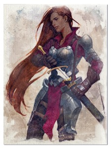
Сон-кошмар
Помимо повсеместной грусти, тлена и этого жуткого парада призраков (уффф, зрелище не для слабонервных — брр, до сих пор мурашки по коже), тут даже во снах творится какая-то чертовщина. И самое поразительное — нам всем приснился один и тот же сон!
Представьте себе: все мы были другими, но я, разумеется, сразу поняла, что это всё равно я. И что рядом со мной — Артур и Малбрин, хоть они и выглядели иначе, и имена у них были какие-то нелепые. А вот Ирина, представьте, осталась собой — только звали её Мариной.
Сон... О, это был настоящий театр ужасов. Старый дом, пропитанный гнилью и отчаянием. Двое детей, умоляющих о помощи — их голоса звенели в ушах, будто колокольчики смерти. Бесконечные хождения по пустому дому, где каждый шаг отдавался эхом в пустоте. И что в итоге? Призраки, разумеется.
История оказалась до тошноты банальной: отец согрешил с няней, родился мёртвый ребёнок — а потом этот безумец ещё и жертвоприношения в своём подвале устраивал. Страд всех проклял — взрослые умерли, дети умерли... Никакого счастливого конца, только тьма и безысходность.
Мы, конечно, чудовище в подвале победили — тут моя лютня сыграла не последнюю роль, уж поверьте, — но призраков так и не изгнали. Жертвовать кем-то из товарищей никто, разумеется, не захотел — это было бы слишком вульгарно. Так что конец сна превратился в настоящий кошмар: игра наперегонки со смертью, разрушающийся дом, ловушки на каждом шагу. В жизни бы не пожелала оказаться в подобной ситуации — бррр, до сих пор холодок пробегает вдоль позвоночника, стоит только вспомнить.
Не знаю, каким чудом, но мы все выбрались из того дома ужаса живыми. И ради чего? Чтобы горстка вампиров всё-таки забрала Ирину (или Марину — какая разница?) с собой — и я, наконец, проснулась.

Проснулась в холодном поту, сжимая в руке струны лютни, будто она могла защитить меня от кошмаров этого проклятого места. Артур храпел рядом, Малбрин бормотала что-то на своём эльфийском, а за окном завывал ветер, словно напоминая: «Баровия не отпускает так просто».
Церковь и безумцы
О, эти жалкие местные... Как же умилительно наблюдать за их примитивными суевериями! Оказывается, они всерьёз полагают, будто все их несчастья — вина Ирины, а также того факта, что сам Страд проявляет к ней интерес. Ещё и твердят, будто вся их семейка проклята, а хоронить отца ни в коем случае нельзя. Глупцы, глупцы, глупцы!
Сама церковь оказалась столь же убогой, как и все эти жалкие домишки в округе. Правда, перед ней копошилась какая-то рыжая дварфийка — невинного вида, но сразу было ясно: она не из местных. Слишком ухоженная, слишком счастливая... Видимо, её, как и нас, занесло сюда туманом. Могла бы стать союзником — если бы не её очевидные проблемы с головой.
Вы только вдумайтесь: она заявила, что была мужчиной и могла писать стоя! А потом добавила, что служила учеником некроманта... Я думала, Артур тут же пришибет её своей праведной карой — но, видимо, даже он распознал безумие в её глазах и сжалился. Зря.
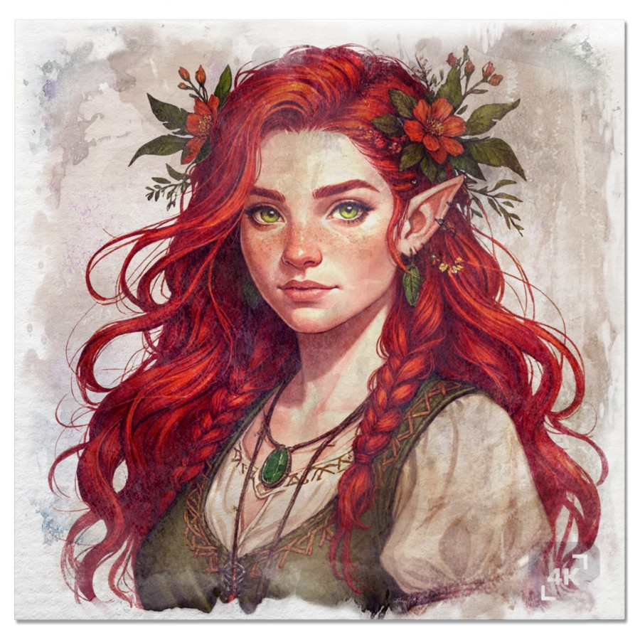
Внутри церковь оказалась разгромлена. Как выяснилось, Донавич закрыл её несколько лет назад. Сыночек решил поиграть в героя, восстал против Страда, а вернулся домой уже порождением вампира. В итоге папаша изолировал его в подвале и закрыл церковь для прихожан.
Расклад неприятный, но вполне ожидаемый. Мы даже уговорили Артура пока не трогать этого несчастного Дору — пусть побудет в живых до похорон Коляна. А вот потом пусть Артур развлекается со своим правосудием, как пожелает.
Концерт для мертвецов
Погребение мы, слава богам, уладили, но вопрос транспортировки тела оставался открытым. Вариантов, прямо скажем, немного: распилить тело и переносить по частям — не вариант, идти ночью опасно, днём нужно как-то замаскировать труп и отвлечь местных.
И тут на сцену выхожу Я. В прямом и переносном смысле. Кто, как не бард, способен приковать к себе взгляды толпы? Я объявила о бесплатном концерте для местных — и устроила им незабываемое шоу. У них и так жизнь серая, артисты сюда, поди, не заезжают. А мне, признаться, льстит их восторг и внимание.
Музыка, танцы, даже пара фокусов — и вот уже все жители лежат у моих ног, заворожённые. Никто даже не заметил, как мои товарищи перевозили тело. Да, денег у них нет, но комплиментами я буквально купалась! Ещё и домашними булочками угостили — какая трогательная щедрость.
Уже темнело. Донович готовился к отпеванию, Артур толок серебро для святой воды, Ирина и Исмарк оплакивали отца, а полоумная Кенна лазила по церкви. И, разумеется, долазилась. Дору вырвался. Ослеплённый жаждой крови, он не оставил нам выбора — пришлось его убить. Донович сам подставился под клинок, пытаясь защитить эту нечисть, и погиб глупо, бессмысленно.
Утром Артуру пришлось отпевать уже двоих отцов. Всё прошло достойно, все выразили соболезнования теперь уже сиротам. Я же задала ещё более скорбный тон мероприятию, наигрывая тихую мелодию на лютне. Дело сделано.
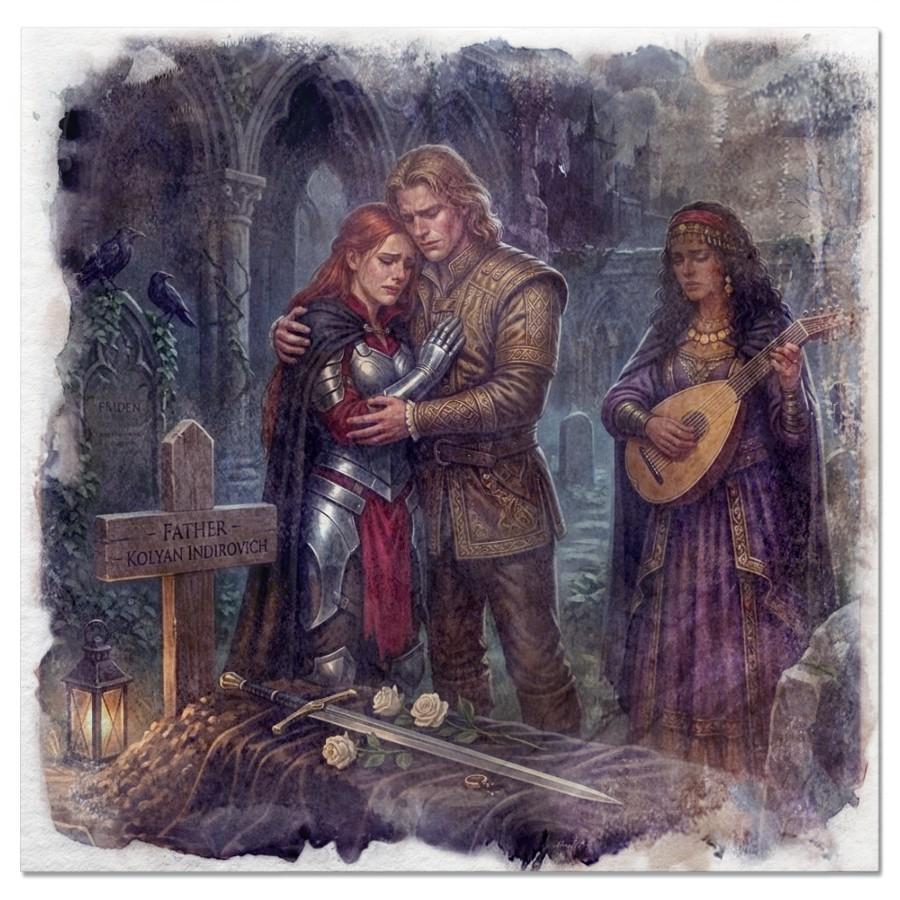
Мадам Ева
По пути нам вновь встретились Вистани и любезно предложили подвезти нас до своего лагеря близ водопада Тсер. О, как же долго я этого ждала!
Встреча с мадам Евой превзошла все ожидания. Она знала, кто я! Знала про книгу, что мне завещали! Знала о нашей судьбе и даже провела сеанс гадания, выдав подсказки, которые нам ещё предстоит разгадать.
Но самое главное — она подтвердила, что во мне есть сила! Что я особенная! Всего один день, один урок — и я уже лучше чувствую эту мощь. Я могу насылать проклятия! О, пусть теперь все мои недруги трепещут!
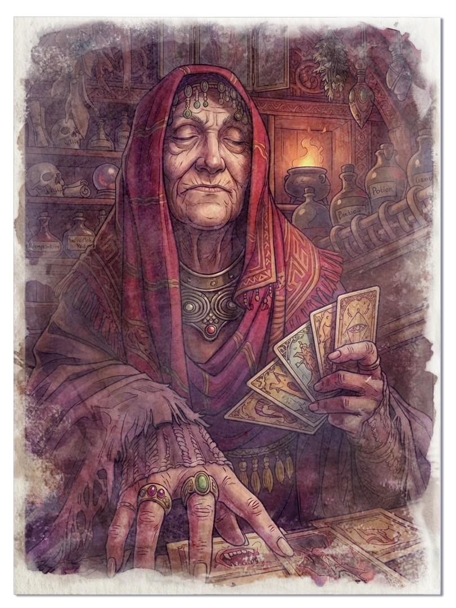
Кенна, правда, надышалась дымом от горевшей соломы и пока не приходит в себя. Ну да ладно — без сознания она куда безопаснее.
О чувствах и планах
Ирина, кажется, положила глаз на нашего твердолобого Артура. Да, он, конечно, недурён собой — особенно на фоне местных, — но я-то думала, его беспросветная тупость и прямолинейность должны отпугивать людей за версту. Надо бы провести с ним беседу о пестиках и тычинках...
А вот брат Ирины выглядит весьма привлекательно. По крайней мере, он воспитан и вежлив. Ох, если бы не его одержимость сестрой и траур по отцу, мы бы уже как минимум мило беседовали за бокальчиком другим красного вина!
Пока же мне остаётся лишь невзначай бросать на него заигрывающие взоры и соблазнительно перебирать струны лютни перед сном. Надеюсь, этой ночью все его сны будут посвящены моей исключительно соблазнительной красоте.
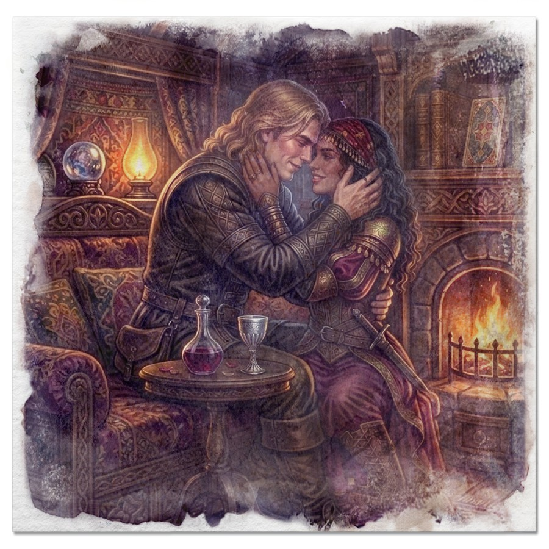